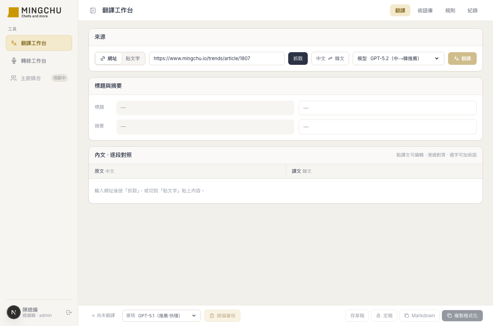
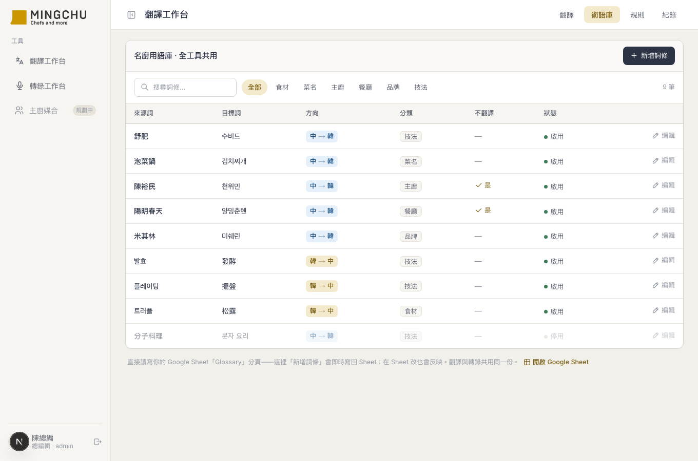

名廚翻譯工作台
用 3 天、純對話協作，幫客戶「名廚 MINGCHU」做出一個中⇄韓文章翻譯工作台——抓官網文章、AI 逐段翻譯、左右對照編輯、再請一個「虛擬總編」二審，全程套用團隊自己的術語庫與編輯口吻。我不寫程式，只負責產品決策與提供真實情境。

為什麼要做這件事
驅動我的不是「想做個翻譯功能」，而是三個真實的編輯痛點。名廚是以廚師為核心的飲食媒體，官網有中文也有韓文文章，常需要互譯：
- 術語會飄：丟通用 AI 翻，同一個主廚名、餐廳名、菜名這段一個譯法、那段另一個。對媒體來說譯名不一致是大忌。
- 譯者語言不對等：負責中文的編輯不一定讀得懂韓文。看到一個翻得怪的中文詞想改、想收進術語庫，卻不知道原文是哪幾個字。
- 沒有「定稿前的關卡」：AI 翻完直接交，沒有一道「在地母語編輯」幫忙抓漏譯、去翻譯腔、統一用詞。
我已經幫同一個客戶做過營收儀表板，驗證過「Next.js + Google Sheets + Vercel」這套，所以這次直接沿用——團隊的術語庫、規則、紀錄全部存在他們自己看得到的 Google Sheet，在網頁改或在 Sheet 改都同步。這是關鍵設計：工具不是黑盒子，資料權還在客戶手上。
最終樣貌
一條龍的編輯流程，全部在一個頁面內：
- 抓取／貼文字：貼 mingchu.io 網址自動抓內文轉 Markdown，或直接貼文字；自動辨識語言方向（有韓文→韓翻中，否則中翻韓）。
- 逐段串流翻譯：整篇一次翻（保全文上下文）、邊翻邊一段段冒出來；自動套用術語庫、規則、編輯口吻；角色感知（標題意譯、內文忠實、專名不譯）。
- AI 反查原文：編輯改好一個中文詞想加進術語庫但不懂韓文——選起來按「AI 找原文」，AI 從對齊的原文裡把對應韓文片段挑出來自動填好，並在左側原文標綠。
- 虛擬總編二審：翻完按「總編審核」，由目標語言的在地總編逐段檢查——抓漏譯、誤譯、統一術語、去翻譯腔，給「建議＋理由」讓你逐段套用或忽略。
- 定稿／複製：定稿後寫回 Google Sheet 紀錄，可複製 Markdown 或格式化 HTML 貼回後台。

系統架構
整條流程「什麼跟什麼串在一起」——所有資料都在 Google Sheet，LLM 全部走 OpenRouter（一支 API、多家模型），前端一律透過自家後端 route 呼叫、金鑰不進前端：
技術選型
| 工具 / 技術 | 選的理由 |
|---|---|
| Next.js + React + Tailwind | 沿用我同客戶營收儀表板驗證過的那套，AI 最熟、踩坑最少 |
| Google Sheets 當資料庫 | 沿用既有 Service Account 與權限模型；團隊在網頁或 Sheet 改都同步，資料權留在客戶 |
| OpenRouter | 一支 API 接 GPT / Claude / Gemini 全家，換模型只換字串、不用各接各的 SDK |
| Vercel | 推 GitHub 自動部署，金鑰放環境變數 |
外部服務與金鑰
跑起來之前需要先準備的東西：
AI 怎麼幫我做的
我一行 code 都沒寫——我做的是產品決策和提供真實使用情境，AI 負責全部實作、實測、除錯。
- 寫所有程式碼、設計架構
- 拿真實文章實測延遲、品質、成本
- 追根因（看模型/伺服器原始回應）
- 多模型 PK、給數據對照表
- 定要做什麼功能、UX 怎麼走
- 模型取捨的原則、最後拍板
- 提供真實使用情境與痛點
- 從使用者體驗回饋、逐波打磨
- 症狀描述型：「翻一半就停住」「審核跳 Unexpected token」——把現象丟給 AI 去查根因，而不是我猜。
- 決策諮詢型：「中翻韓預設要不要換模型？」——要求 AI 先拿真實文章實測、用數據說話，再一起拍板，不憑感覺。
- 迭代回饋型：看了成品提下一個優化點（「字太小」「按鈕不明顯」「收合鍵位置怪」），一波一波打磨。
1. 逾時的根因不是「模型慢」。長文審核一直壞，一開始以為是 Vercel 60 秒上限把慢模型砍了。後來叫 AI 直接拿客戶那篇真文章去打 OpenRouter、看模型的原始輸出，才發現真兇是——Sonnet 對「韓文輸出」根本不守 JSON 格式。這個坑用合成測資完全測不出來。
2. 沒有一個模型兩個方向都最好。叫 AI 拿真文章做中翻韓品質 PK，發現 GPT-5.1 中文在地用詞準（托斯卡尼）但韓文會出包（把「五柳」翻錯成「五味」）；GPT-5.2 反過來。於是決定方向感知預設，並把在地譯名鎖進術語庫。
3. 架構是被真實限制逼出來的。虛擬總編審核從「單次呼叫」→「只回要改的」→「分批並行」，每一步都是被 Vercel 60 秒上限逼著演進，不是一開始就設計好的。
踩到的坑，讓我更懂的事
根本原因：整篇一次翻＝輸出越多越久；慢模型的長文會超過 Vercel 60 秒被硬砍，而前端「串流斷了卻沒收到結束訊號」當時是靜默停掉。
解法：先上串流（邊翻邊看、體感快很多）、斷線改成明確報錯不再靜默、預設換成快模型。
根本原因：審核要模型回結構化 JSON。Sonnet 對中文輸出很乖，對韓文輸出就不守規矩（加前言、用條列）。問題不在「方向」，在「輸出語言」。
解法：審稿預設換成守 JSON 又快的 GPT-5.1；JSON 抽取也改得更穩。
Takeaway
把 AI 當「實作 + 實測 + 除錯」的夥伴，自己守住「產品決策 + 真實情境」這兩塊。最有效的兩個動作是——遇到問題用症狀描述讓 AI 查根因；要做選擇時，要求 AI 拿真實資料實測、用數據說話，而不是大家一起憑感覺猜。
- 「這個功能在 ___ 情境下會壞，幫我拿真實資料重現，並去看模型/伺服器的原始回應查根因，不要用合成測資。」
- 「同一個任務用 A／B／C 模型各跑一次，給我速度＋品質＋成本的對照表再建議，我要看數據才決定。」